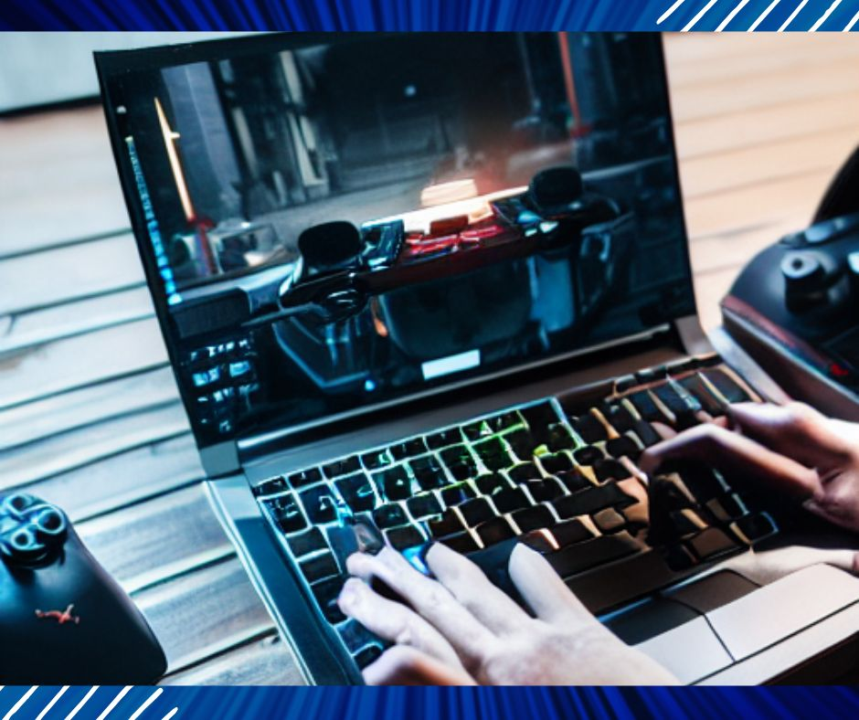

Good gear is a must for gaming at home, and we recommend the best gaming laptops and the best value-for-money gaming laptops for every type of gamer. The best gaming laptops come in all shapes and sizes to suit your needs—different needs and budgets.
Because while there are $5,000-plus models with the highest-end graphics cards and the best displays that might give you the best gaming laptop experience, most of us can’t afford such a device. Even if it could, it’s not the best gaming laptop for those who travel a lot with their PC.
Thankfully, there are now more gaming laptops to choose from, from budget-friendly to VR-ready laptop types. Some feature full-size Nvidia GeForce GTX or RTX graphics cards, while others feature more efficient Max-Q designs for thinner chassis and quieter fans.
While many of the best gaming laptops have 1080p displays and high refresh rates, some of them also include 4K screens. To help you find the best gaming laptops available today, we’ve rounded up the best models we’ve tested and reviewed recently:
The most powerful gaming laptop MSI Raider GE66 4K 120Hz Gaming Laptop
CPU: Intel Core i9-12900HK | GPU: GeForce RTX 3080 Ti Display: 17.3 inches, UHD 4K 120Hz
Pros: Powered by the latest 12th Gen Intel Core i9 processors to give your multitasking projects and performance-demanding games an unprecedented boost
Disadvantages: expensive
If you’re looking for a laptop with desktop-grade power, the MSI GE76 Raider will pretty much meet your needs, but it comes with a hefty price tag. Still, its high-end components like the Intel Core i9-12900HK and Nvidia GeForce RTX 3080 Ti shine.
The 17.3-inch, 4K display runs at up to 120 Hz, which is great for esports players, but others may want to consider a 1440p or 4K display, depending on the configurations available.
With a powerful combination of Intel Core i9-12900HK and Nvidia GeForce RTX 3080 Ti, the new MSI GE76 Raider represents a step forward for gaming laptops, at least when it comes to performance (especially when it comes to CPU performance) . With ports for peripherals and extra storage, and an eye-catching RGB light bar (which you can turn off if that’s not your thing), the Raider offers a powerful desktop for those looking for something more svelte and portable than a gaming console. machine substitutes.
Its downside is the loud fans, which most gaming laptops are, but this one is quite noticeable. If you’re gaming with headphones or speakers, this probably isn’t an issue.
Msi Ge66 Raider Gaming Laptop for best overall performance
CPU: Intel Core i9-10980HK | GPU: Nvidia GeForce RTX 2080 Super Max-Q Display: 15.6 inches, 1920 x 1080, 300 Hz | Weight: 5.3 lbs (2.4 kg)
Pros: Great gaming performance; 300 Hz display; has a good RGB light bar
Cons: Cramped keyboard; mediocre audio
The MSI GE66 Raider is a gaming laptop with a large RGB light bar and a lot of sounds. Its new look has an edge, and it also packs an Intel Core i9-10980HK and an Nvidia GeForce RTX 2080 Super Max-Q.
For those looking for gaming-grade performance in games like League of Legends or Overwatch, a 300Hz display is an option.
While it’s not the thinnest laptop around (not even MSI’s thinnest), it’s certainly remarkably portable considering what’s inside, and we can’t help but appreciate its high-end build quality. Gaming frame rates are competitive, and its 300 Hz screen is perfect for eSports.
The thinnest and lightest gaming laptop ASUS ROG Zephyrus G14
CPU: AMD Ryzen 4900HS | GPU: Nvidia GeForce RTX 2060 Max-Q | Display: 14 inches, 1920 x 1080 120Hz | Weight: 1.6 kg (3.6 lbs)
Pros: Good looks; AMD Ryzen 4900HS offers strong performance; comfortable keyboard, good battery life
Cons: No webcam; no Thunderbolt 3
For gamers who like thin and light gaming laptops, we would choose this ASUS ROG Zephyrus G14. Its AMD Ryzen 4900HS and Nvidia GeForce RTX 2060 Max-Q handle tough tasks and deliver remarkably smooth gaming performance. Its battery life is also very strong, and the keyboard feels very nice to touch. The Zephyrus’ battery life was around 11 hours and 32 minutes. This is an excellent feature for a gaming notebook and even some ultrabooks. Premium gaming notebooks average just under 4 hours. This means that the Zephyrus is suitable as your everyday work laptop in addition to being a gaming laptop.
If you’re looking for a gaming laptop that looks great, lasts a long time without charging, and can play your favorite games at a reasonable price, the Asus ROG Zephyrus G14 might just be the one for you. But if you want Thunderbolt 3 or a faster 144 Hz monitor, you should consider the Dell G7 15 or the Acer Predator Triton 500.
Best Value Gaming Laptop 2021 Flagship Dell G5 15 Gaming Laptop 15.6″
CPU: 10th Generation Intel Core i7 Processor | GPU: NVIDIA GeForce GTX 1650 Ti 4GB GDDR6 | Display: 15.6-inch Full HD Display | RAM: 64GB DDR4 | Storage : 256GB SSD + 512GB SSD
Pros: Great value for money, great form factor, powerful memory, solid, compact, and powerful mid-range gaming laptop
Cons: a bit heavy
This Dell G5 15 gaming laptop is a great value, it has 64GB DDR4 memory and 256GB SSD + 512GB SSD storage capacity, it is equipped with a powerful and fast 10th generation Intel Core i7 processor, and a 15.6-inch full HD ( 1920 x 1080) 60Hz refresh rate 300 nits WVA anti-glare LED-backlit display; dedicated NVIDIA GeForce GTX 1650 Ti 4GB GDDR6 and integrated Intel UHD graphics. Whether playing games or doing dual-screen work through the HDMI expansion interface or surfing the web or using Msft Office and streaming media; everything can work easily and quickly.
ASUS ROG Zephyrus Duo Gaming Laptop
CPU: Intel Core i9-10980HK | GPU: NVIDIA GeForce RTX 2080 Super with ROG Boost | Display: 15.6″ 4K UHD main screen with innovative secondary screen | Memory: 32GB DDR4 3200MHz | Storage : 2TB RAID 0 (1+1) PCIe NVMe M.2 SSD
Pros: Great value for money, great form factor, powerful memory, solid, compact and powerful mid-range gaming laptop
Disadvantages: high price
Gaming at 4K resolution on the Zephyrus Duo 15 will be tempting, but it still won’t be able to consistently hold it at high frame rates or detail levels. While some form of high performance can be achieved, it does come at a somewhat high price.
However, as you can see from the benchmark results, the Zephyrus Duo 15 can play almost any game in 1080p mode without any issues. It works much better in HD than 4K, which is one reason we’d probably choose a 1080p 300Hz screen over any UHD alternative. As much as I love 4K gaming and detail, the smoother frame rate and speed are likely a better use of this machine and its components.
Overall, though, the home screen and widgets make for a great experience in all types of games. The colors and contrast on the panel are beautiful, and watching games on the main display is a joy. The machine’s performance also means you can enjoy gaming for hours without lag or stuttering.
Razer Blade 15 Advanced Gaming Laptop
CPU: Intel Core i7-10875H | GPU: Nvidia RTX 2080 Super Max-Q | Display: 15.6 inches, 1920 x 1080, 300Hz | Weight: 7.9 lbs (3.5 kg)
The Razer Blade 15 Advanced Gaming Laptop Mode has a sleek design that’s easy to take anywhere and offers a wide selection of ports if you also want to plug in a ton of peripherals. The Blade has Nvidia RTX 2080 Super Max-Q graphics. It also has options for a faster 300 Hz display, perfect for eSports. Razer opted for Intel’s 10th-gen H-series processors to power the Blade 15’s processing power, rather than going with a Ryzen chip. It’s not as power efficient as Ryzen, but it’s more powerful.
The Razer Blade 15 Advanced Gaming Laptop has a refined keyboard layout and is easy to carry around. It also has a good selection of ports, with USB-C, HDMI, SD card reader, etc. It has very strong stability and long battery life. Its 300Hz display is perfect for playing eSports games.
Best 17- inch Gaming Laptop New Alienware m17 R3 17.3 inch FHD Gaming Laptop
CPU: Intel Core i7-10750H | GPU: Nvidia Geforce RTX 2070 | Display: 17″, 1920 x 1080, 300Hz | RAM: 16G | Weight: 4.65 lbs
Alienware m17 R3 is a laptop specially designed for gaming enthusiasts, it maintains the brand’s unique sci-fi style, with excellent sci-fi aesthetics. It’s crafted from high-end materials, and it’s lightweight, and performs well. It can provide 300Hz, 300nits, and 3ms Full HD images can provide a very comfortable picture experience for the game. It Alienware Cryo-Tech optimizes component cooling to maximize overall performance and keep the laptop cool to the touch.
It weighs only 4.65 pounds and is less than 20.5mm thick, making it easy to carry and move. Its 300Hz display with 100% sRGB color gamut, 800:1 contrast ratio, 300 nit brightness, and 3ms response time provides gamers with premium conditions. And it uses unique technology to reduce blue light, which reduces exposure to high-energy visible light. It’s a very good gaming laptop that not only looks great but also performs very well, and it’s one that gamers will love.
Acer Nitro 5 Gaming Laptop Affordable Gaming Laptop
CPU: 9th Gen Intel Core i5-9300H | Graphics Card: NVIDIA GeForce GTX 1650 | Display: 15.6-inch Full HD IPS Display | Memory: 8G
This gaming laptop is incredibly affordable, with 9th Gen Intel Core processors and high-performance NVIDIA GeForce GTX 1650 graphics. And the laptop is Alexa-enabled, allowing Alexa to help you set reminders, timers, and alarms, create shopping and to-do lists, and keep track of your calendar, among other things. And it supports memory upgrades.
It’s a great laptop for the beginning gamer, with a pretty decent bright screen. The keyboard is red, very nice. It’s cheap, has very advanced hardware, looks stylish, and it’s capable of everyday tasks and needs. It’s an entry-level gaming laptop at a very affordable price.
New Alienware Area 51M Gaming Laptop
CPU: Intel Core i7-10700K | Graphics Card: Nvidia Geforce Rtx 2070 | Display: 17.3-inch Full HD IPS Display | Memory: 16G
This gaming laptop is a solid performer, featuring an Alienware TactX keyboard with N-key rollover technology that enables commands over 103 keys. It has a nice screen, and the keyboard is nice and responsive. New Alienware Area 51M Gaming Laptop can provide 300Hz 300nits 3ms Full HD to make your game screen very realistic and clear and smooth.
Alienware Cryo-Tech optimizes component cooling to maximize overall performance and keep the laptop cool to the touch. And at just 4.65 pounds and less than 20.5mm, the new Alienware m15 is the thinnest gaming laptop in Alienware history. Its performance is more like a desktop computer, whether it is game performance, its appearance and design are very good, it is very worth owning!
Best Gaming Laptop Around $1000 MSI GF65 Thin 15.6″ 120Hz Gaming Laptop
CPU: Intel Core i7-9750H | Graphics Card: GTX1660Ti | Display: 15.6-inch Full HD IPS Display | Memory: 16G
MSI has an edge when it comes to building powerful, high-performance gaming laptops. The MSI GF65 is a slim laptop with great hardware features, so it’s perfect for gaming. It has the same dimensions as the previous GF63 version, but with some internal updates.
The MSI GF65 has an aluminum body, which makes it more durable and less prone to overheating. It has a 15.6-inch IPS display with a resolution of 1920×1080 pixels. The display is brightly colored and has a screen refresh rate of 120Hz, giving you smoother gaming images while gaming. The screen’s thin bezels give you a larger display size that will look more comfortable.
This gaming laptop is equipped with an Intel Core i7-9750h processor, allowing you to play all types of games smoothly. 16GB DDR4 RAM lets you multitask efficiently without slowing down. It offers NVIDIA GeForce GTX1660Ti graphics, allowing you to get stunning image quality and play games on higher settings.
It also has a backlit keyboard with red lettering on the keys, which looks cool when the keyboard glows in red. The keys have a comfortable feel and won’t bother you when using them for gaming. It has 512GB NVMe SSD storage, which can increase the speed of the laptop to a greater extent than a traditional HDD. 512GB of storage is enough to download multiple premium games. Overall, it’s one of the best gaming laptops for around $1,000.
Best laptop around $1500 Lenovo Legion Y7000 Gaming Laptop
CPU: Intel Core i7-8750H | Graphics Card: NVidia GeForce GTX 1060 | Display: 15.6-inch Full HD Display | Memory: 16G
The Lenovo Legion Y7000 is a sleek and slim gaming laptop that delivers incredible performance for its price range. This laptop comes in gray and black, which is very understated. There’s a large Legion logo in the center of the lid, and it has a smooth gray finish. The bezels of the screen are very slim, and the edges are curved, which is very nice.
It has a large 15.6-inch display with 1080p resolution. The bright screen delivers stunning image quality when gaming. It comes with 6GB NVIDIA GeForce GTX 1060 graphics, allowing you to play modern games at higher settings.
Featuring an Intel Core i7-8750H processor and 166GB of RAM, the Lenovo Legion Y7000 provides fast multitasking and allows heavy gaming without slowing down the computer. With such a powerful processor, you won’t have any trouble uploading videos on Youtube and opening multiple options in your browser.
The average battery life when using it for web browsing and routine computing tasks is over 5 hours. The battery life is less than 5 hours for game time when playing modern games, as such games require a lot of CPU resources. But it’s good enough for a gaming laptop. Overall, this high-performance laptop is well worth considering.
Best budget gaming laptop with great battery life Dell Gaming G3 15 3500
CPU: Up to 10th Gen Intel Core i7 RAM: 16GB Screen: 15.6″ IPS 1080p @ 144 Hz Storage: 512 GB SSD Battery: 51 Wh Dimensions: 0.85 x 14.4 x 10″ Weight: 5.40 lbs
Let’s face it, trying to find a good gaming laptop on a budget can be a chore. You have to make compromises in terms of performance, design, and even battery life. Thankfully, the Dell G3 15 offers decent 1080p gaming for sub-$1,000 configurations, and the battery life is actually good. The most notable improvement over the previous model is its slimmer, sleeker design. With thinner bezels around the 144Hz display, the sleeker design gives it a more premium vibe.
Best big-screen gaming laptop ASUS ROG Strix Scar 17 Gaming Laptop
CPU: Up to AMD Ryzen 9 5900HXGPU: Up to Nvidia RTX 3080 Memory: Up to 32 GB DDR4-3200 Screen: 17.3 inches Storage: Up to 2x 1 TB M.2 SSD
You can undoubtedly buy smarter gaming laptops than this, but the ROG Strix Scar 17’s overuse makes it incredibly appealing. It feels like everything about it is turned up to max, from the overclocked CPU, to the gorgeously fast 360Hz screen; Asus pushed our gaming laptop benchmarks harder than most.
And it tops benchmarks for the best gaming laptop it’s ever made, thanks largely to the GeForce RTX 3080 that’s beating its core. This is a 115W version of Nvidia’s top-of-the-line Ampere GPU, which means it’s capable of numbers coveted for thinner machines. You can also take advantage of Nvidia’s excellent DLSS (implemented) to help achieve ridiculous framerates.
The 17-inch chassis means there’s more room for components to breathe compared to the competition too, and combined with an excellent cooling system; you’re looking at a cool and quiet gaming-perfect slice. That extra real estate allows Asus to squeeze an optomechanical keyboard on top of the Scar 17, which is a joy for gaming and more serious pursuits.
Acer Predator Helios 300 Gaming Laptop, a premium affordable 240Hz gaming laptop
CPU: Up to AMD Ryzen 9 5900HXGPU: Up to Nvidia RTX 3080 Memory: Up to 32 GB DDR4-3200 Screen: 17.3 inches Storage: Up to 2x 1 TB M.2 SSD
You can undoubtedly buy smarter gaming laptops than this, but the ROG Strix Scar 17’s overuse makes it incredibly appealing. It feels like everything about it is turned up to max, from the overclocked CPU, to the gorgeously fast 360Hz screen; Asus pushed our gaming laptop benchmarks harder than most.
And it tops benchmarks for the best gaming laptop it’s ever made, thanks largely to the GeForce RTX 3080 that’s beating its core. This is a 115W version of Nvidia’s top-of-the-line Ampere GPU, which means it’s capable of numbers coveted for thinner machines. You can also take advantage of Nvidia’s excellent DLSS (implemented) to help achieve ridiculous framerates.
The 17-inch chassis means there’s more room for components to breathe compared to the competition too, and combined with an excellent cooling system; you’re looking at a cool and quiet gaming-perfect slice. That extra real estate allows Asus to squeeze an optomechanical keyboard on top of the Scar 17, which is a joy for gaming and more serious pursuits.
MSI GE76 Raider 17.3inch 360Hz Gaming Laptop, a gaming laptop that can replace a desktop
CPU: Up to AMD Ryzen 9 5900HXGPU: Up to Nvidia RTX 3080 Memory: Up to 32 GB DDR4-3200 Screen: 17.3 inches Storage: Up to 2x 1 TB M.2 SSD
The MSI GE76 Raider is our pick for a gaming laptop that can replace a desktop. Yes, it has a giant RGB light strip. It offers very powerful performance with components up to Intel Core i9-11980HK and Nvidia GeForce RTX 3080. The 17.3-inch display is bright and clocks up to 360 Hz for those who want to play Dota 2 or League of Legends as smoothly as possible.
For enthusiasts looking to replace their desktops with a gaming laptop, the MSI GE76 Raider has it all. This is a top-performing gaming machine with an Intel Core i9-11980HK and Nvidia GeForce RTX 3080 with a 360 Hz display for esports like League of Legends or Dota 2.
The best dual-screen gaming laptop ASUS ROG Zephyrus Duo SE 15 Gaming Laptop
CPU: AMD Ryzen 9 5900HXGPU: Nvidia GeForce RTX 3080 Display: 5.6 inches, main display 3840 x 2160 ScreenPad Plus 3740 x 1100 Weight: 5.29 lbs / 2.4 kg
ASUS’ latest ROG Zephyrus Duo uses AMD’s top-end RYzen 9 5900HX paired with an Nvidia GeForce RTX 3080 for power while using a second screen raised to allow more ventilation for improved cooling.
Both displays are bright and colorful, and at more than 4 hours and 52 minutes on our battery test, it’s durable (for a gaming notebook, anyway).
The keyboard and mouse are in awkward positions, like most dual-screen notebooks on the market (most people will probably use an external mouse for gaming).
Gaming Notebook Buying Guide:
Here are a few things to consider when buying a gaming laptop:
1. Have a good GPU:
While some games use the CPU, most games are still GPU-bound, so this is one of the biggest decisions you’ll make when buying a gaming laptop. Most gaming laptops these days feature Nvidia GeForce GTX or RTX GPUs. A quality GPU will ensure that your laptop will play games on high settings for years.
2. Consider its upgrade space:
There are many laptops that allow you to upgrade the memory space and hard drive space inside it.
3. Consider its resolution and speed:
Considering its resolution and refresh rate, the higher the refresh rate, for example, 144HZ, is more beneficial to playing e-sports games.
4. Consider its battery life:
Choose a laptop with long battery life.
5. Consider its specifications:
Look at its CPU performance, RAM memory space, and storage space.
6. Look at its display:
Size: Most gaming laptops have 15- or 17-inch screens, although some larger systems have 18-inch screens and a few 14-inch screens. Which size you prefer is a matter of personal preference, but remember that the bigger the screen, the bigger and heavier the laptop.
Resolution: Never buy a display with less than 1920 x 1080. If you have an RTX 2070 or RTX 2080, a 2560 x 1440 display is something to consider. 4K (3840 x 2160) screens are an option on some gaming laptops, but you may still need to turn off certain settings for smoother gameplay, especially if ray tracing is enabled.
Refresh rate: Most laptops have 1080p resolution and 60Hz displays. For many gamers, that’s definitely enough. Higher-resolution displays (2560 x 1440, 3840 x 2160) also look beautiful, and for some gamers, 1080p may be the sweet spot. Some vendors offer FHD monitors with faster 144Hz or 240Hz refresh rates for smoother gaming. Of course, you’ll need a decent GPU and play-on settings that emphasize frame rate over graphical fidelity to take advantage of it.
Nvidia G-Sync and AMD FreeSync: Certain gaming laptops, especially high-end gaming laptops, support technologies that synchronize the display with the graphics card, eliminating screen tearing and ghosting.
Avoid touchscreens: As nice as touchscreens are, they’re still not necessary on gaming laptops (though there are some 2-in-1 models). They drain battery life and add too much gloss to the display.
Related Article: Recommended Laptops in the US in 2023 [TOP21]
7. Look at its keyboard:
- Key travel: This is how far you can press a key. Generally, we prefer keys with more than 1.5mm of key travel, and 2mm of hit is even better. This prevents you from “bottoming up” or banging on the keyboard frame. You can even find mechanical keys when you buy some very expensive laptops.
- Actuation: This is how much force you need to apply to the key to depress it. We generally like something between 65 and 70 grams, enough to provide resistance without feeling soft.
- Macro keys: Finding macro keys is more difficult on a gaming laptop than on a desktop keyboard, but it’s not impossible. A good set of programmable macro keys will make it easy for you to accomplish the most common tasks in games. Laptop manufacturers often provide custom software for this.
- Anti-ghosting and n-key rollover: These are two features that will keep you performing at your best in games. Anti-ghosting means you won’t go wrong when you’re chain-clicking or performing multiple actions on multiple keys. Also, n-key rollover means that each key is independent of the others and will be registered no matter which another key is pressed.
- Backlight: There are some gaming laptops that will offer a backlight, but it can only be red or white. The best keyboards have RGB backlighting. Some operate by region (or part of the keyboard), while others allow customization on a per-key basis. Some even let you change the lighting depending on the game.
Common brands of gaming laptops:
Alienware (Dell) –Alienware has entered the lightweight game with the Alienware m17 but has also carved out its own desktop-powered lead with the Alienware Area-51m. Dell also makes its own entry-level gaming laptops.
ASUS –ASUS offers some sleek designs. Its ROG Gaming Center software shares device information, including temperature, storage, and RAM usage, while its Armory Crate program lets you customize the RGB backlighting. Asus also makes the Zephyrus G14, the best AMD laptop we’ve seen.
Acer –Known for affordable hardware that wows us with its performance, like its Acer Predator Helios 300 Gaming Laptop. The PredatorSense app lets you monitor CPU and GPU usage, and customize fan speeds.
HP –HP’s Omen line has had a more classic design lately but has maintained a gamer aesthetic. Its app is Omen Command Center and it details GPU and CPU usage, and RAM utilization.
Gigabyte vs. Aorus –Gigabyte and its sub-brand Aorus offer a variety of products. Gigabyte leans towards the lower end with more color options, while the Aorus models are light and thin. Whichever you choose, you’ll get Fusion software for RGB customization. Aorus features command and control for easy overclocking.
LENOVO –Lenovo’s gaming lineup is called Legion, and it was recently redesigned to be more minimalist. Instead of creating new software, the company has changed the Vantage app to focus on CPU, GPU, RAM, and HDD information, as well as providing buttons for increasing fan speed.
MSI – MSI’s gaming laptops are usually large, black and red, although the company’s recently announced Stealth Thin shows it can do better, too. Of course, you’ll notice that its iconic dragon logo is pretty cool. MSI includes its Dragon Center software, which has recently been redesigned. It allows system monitoring, multiple performance profiles, controlling fans, and custom keyboard backlighting features.
Razer –Razer designs are some of the best in the business and are known for their RGB lighting. Razer Synapse lets you record macros and set lighting on your laptop and accessories.
Related Article: How to measure laptop screen size
Frequently Asked Questions
What screen size is best for a gaming laptop?
Arguably, this will have the most immediate impact on your choice of the build. Choosing a screen size basically determines the size of your laptop. A 13-inch machine will be a thin and light Ultrabook, while a 17-inch panel is all but guaranteed workstation performance. At 15 inches, you’re looking at the most common size for a gaming laptop screen.
Is the gaming laptop good for everyday use?
Can You Use Your Gaming Laptop As A Regular Laptop? Yes, you can. This is a simple answer to a question many people ask. Gaming laptops can do anything a normal laptop can do.
Can a gaming laptop be as good as a desktop?
Modern gaming laptops can be very efficient and powerful. While desktops still have a performance advantage with high-end components and cooling, the difference is much smaller than before.